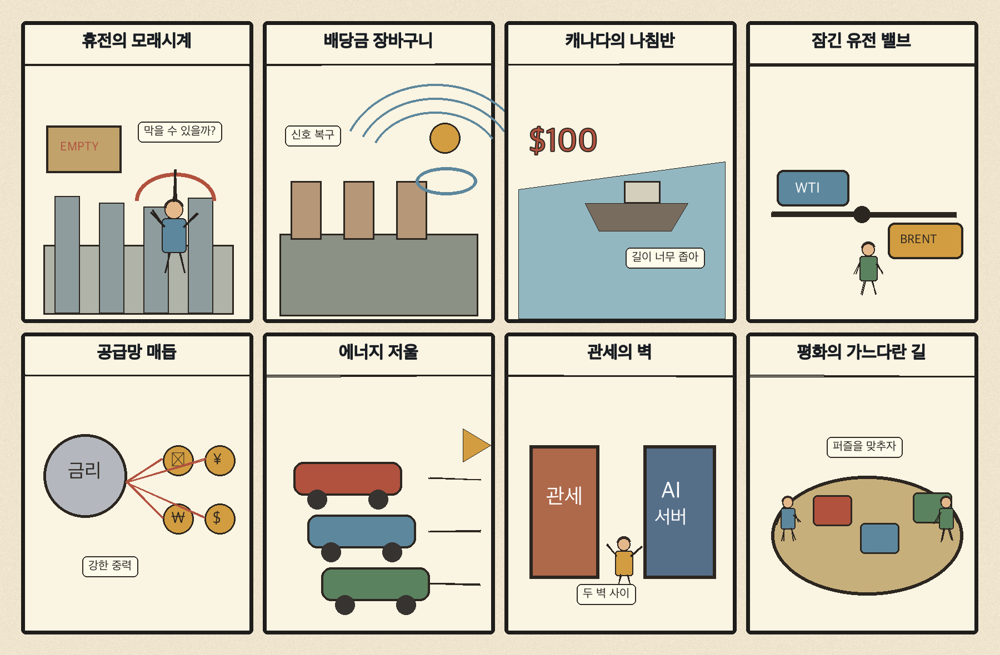
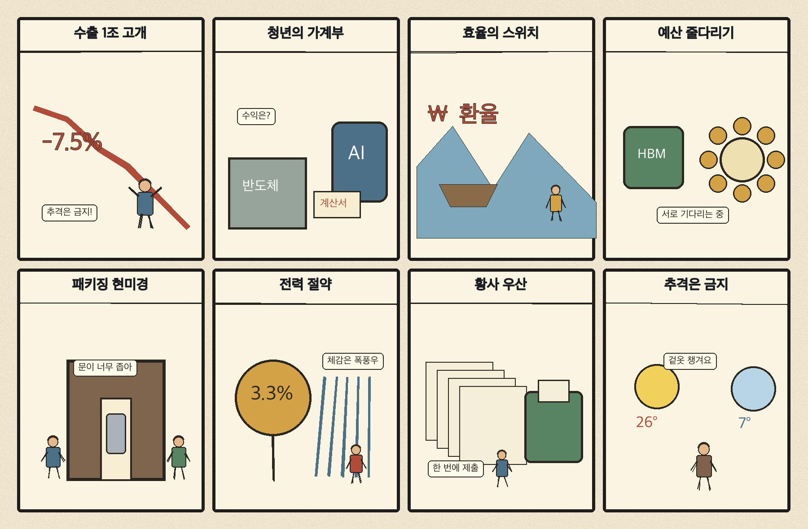

01
아마존 · 232.54→240.35달러 · +3.36%
내용요약 시가 대비 +3.36%로 조사군 최상위였으며 대형기술주 매도 속에서도 상대적 강세를 보였습니다.
예상여파 전자상거래·클라우드의 방어력을 보여주지만 기술주 전반의 변동성 확대는 유의해야 합니다.
MORNING_BRIEFING_20261102
작성 시각: 2026-11-02 06:32 KST · 직전 미국 정규장과 2026-11-02 KST 당일 공개 기사 기준
직전 미국 정규장인 10월 30일 뉴욕증시는 다우 -1.09%, S&P 500 -1.82%, 나스닥 -2.86%로 동반 하락했습니다. AI 투자 수익성 우려와 인텔 급락이 기술주 매도를 키웠습니다. 전일 KOSPI도 종가 기준 -3.48%, 시가 대비 -0.51%로 밀린 만큼 다음 거래일 국내장은 반도체 대형주와 외국인 수급의 안정 여부가 핵심입니다.
| 지수 | 종가 | 등락률 | 한국 증시 시사점 |
|---|---|---|---|
| 다우존스 | 51,770.31 | -1.09% | 경기민감주 위험회피 |
| S&P 500 | 7,580.07 | -1.82% | AI·반도체 투자심리 부담 |
| 나스닥 종합 | 25,437.00 | -2.86% | AI·반도체 투자심리 부담 |
직전 미국장은 AI 수익성 우려와 반도체 매도로 위험회피가 강했습니다.
직전 국내장은 5,730.74로 마감했고 시가 대비 -0.51%였습니다.
중동 위험 속 12월 증산 중단으로 수입물가 부담이 남았습니다.
갭 하락을 추격하지 말고 외국인 수급과 5,600선 지지를 확인합니다.
11월 1일 보고서는 일요일 휴장, 미국 AI·반도체 급락과 필수 수급·컨센서스·유사 조건 표본 부족으로 공식 추천을 내지 않았습니다. 사후에 종목을 추가하지 않습니다.
| 시장 | 종가 | 등락률 | 기준 |
|---|---|---|---|
| KOSPI | 5,730.74 | -3.48% | 10월 30일 · 시가 대비 -0.51% |
| KOSDAQ | 724.38 | -3.83% | 10월 30일 · 시가 대비 -1.81% |
| 다우존스 | 51,770.31 | -1.09% | 미국 10월 30일 정규장 |
| S&P 500 | 7,580.07 | -1.82% | 미국 10월 30일 정규장 |
| 나스닥 종합 | 25,437.00 | -2.86% | 미국 10월 30일 정규장 |
아마존이 시가 대비 +3.36%로 조사군 최상위였습니다.
스포티파이 +3.21%, 액센츄어 +2.64%로 방어했습니다.
팔란티어 -4.91%, 크라우드스트라이크 -4.07%였습니다.
마벨 -4.56%, 인텔 -3.80%, 어플라이드머티리얼즈 -1.69%였습니다.
내용요약 시가 대비 +3.36%로 조사군 최상위였으며 대형기술주 매도 속에서도 상대적 강세를 보였습니다.
예상여파 전자상거래·클라우드의 방어력을 보여주지만 기술주 전반의 변동성 확대는 유의해야 합니다.
내용요약 시가 대비 +3.21% 상승해 서비스 플랫폼 종목 중 강했습니다.
예상여파 구독형 서비스의 차별화가 부각됐지만 단일일 상승을 추격 신호로 보기는 어렵습니다.
내용요약 시가 대비 -4.91%로 조사군 최하위권을 기록했습니다.
예상여파 AI 소프트웨어 고평가 논쟁이 국내 성장주에도 위험회피로 전이될 수 있습니다.
내용요약 시가 대비 -4.56% 하락하며 AI 인프라·반도체 매도 영향을 받았습니다.
예상여파 국내 반도체 공급망 심리에 단기 부담이며 월요일 갭 하락 뒤 수급 확인이 필요합니다.
내용요약 시가 대비 -3.80%였고 당일 보도 기준 종가 기준 낙폭은 더 크게 부각됐습니다.
예상여파 미국 반도체 투자심리 악화가 국내 대형 반도체와 장비주 변동성을 키울 수 있습니다.
직전 미국장의 나스닥 -2.86%, S&P 500 -1.82%와 AI·반도체 매도는 오늘 국내 반도체·인터넷 성장주의 갭 하락 위험을 높입니다. OPEC+의 12월 증산 중단은 수입물가 부담입니다. 반면 수출 1조달러 기대는 원화와 대형 수출주의 중기 완충 요인입니다. 개장 직후 추격보다 외국인 현·선물 수급, 반도체 대형주의 낙폭 축소와 KOSPI 5,600선 지지를 먼저 확인하는 편이 낫습니다.
오늘은 추천 없음 — 현금 관망
장전 시점에 전일까지의 외국인·기관 수급, 컨센서스 변화와 30건 이상 유사 조건 표본을 함께 확보해 종합점수 75점·상승확률 60%·예상 손익비 1.5를 모두 검증할 종목이 없습니다. 미국 기술주 급락 뒤 월요일 갭 위험도 큽니다.
관심 연결종목 첨단 패키징·AI 데이터센터 효율·수출 대형주는 관찰 대상일 뿐 매수 추천이 아닙니다. 장 초반 갭 변동 종목은 추격매수를 금지합니다.
직전 급락 뒤 매도 강도가 줄어드는지 개장 초 확인합니다.
미국 기술주 매도가 국내 HBM·패키징·인터넷으로 번지는지 봅니다.
유가와 원·달러 환율이 운송·화학·정유 업종에 미치는 영향을 점검합니다.
갭 하락 뒤 지수 지지와 반도체 대형주의 낙폭 축소 여부를 봅니다.
핵심 요약: 생성형 AI 자금조달은 더 대형화되고 GPU 공급 제약은 가격 부담으로 번지고 있습니다. 첨단 패키징, 피지컬 AI와 데이터센터 에너지 효율이 모델 경쟁 다음의 핵심 실행 과제로 부상했습니다.
내용요약 국부펀드·연기금 자금이 북미로 몰리는 가운데 앤스로픽이 대규모 자금 유치에 나섰다는 당일 보도입니다.
예상여파 생성형 AI 선두권의 자본집약 경쟁이 심해지며 모델·클라우드·데이터센터 투자가 더 대형화될 수 있습니다.
내용요약 엔비디아와 AMD 그래픽카드 공급 부족으로 한 달 사이 일부 가격이 크게 올랐다는 해외 매체 보도입니다.
예상여파 AI 가속기와 그래픽카드의 공급 제약이 완제품 가격과 부품 유통 재고의 변동성을 키울 수 있습니다.
내용요약 삼성전자가 일본 첨단 반도체 패키징 연구거점을 점검하고 현지 소부장 협력을 강화한다는 당일 보도입니다.
예상여파 HBM 이후 병목인 첨단 패키징의 장비·소재 협력이 차세대 AI 반도체 양산 속도에 영향을 줄 전망입니다.
내용요약 AI 확산 속에서 한국 로봇·자율주행 산업의 향후 5년이 승부처라는 머니투데이 당일 기사입니다.
예상여파 피지컬 AI의 실증·규제·부품 국산화가 산업 경쟁력과 투자 성과를 가르는 핵심 조건이 될 수 있습니다.
내용요약 AI 시대에 경북의 전력 공급 기반이 산업 경쟁력으로 연결된다는 영남일보 당일 칼럼입니다.
예상여파 데이터센터와 첨단 제조의 입지 경쟁에서 안정적 전력망과 지역 수용성이 핵심 조건으로 커질 수 있습니다.
핵심 요약: 우크라이나의 한시 휴전 종료로 지정학적 긴장이 남았고 미국에서는 관세 배당 공약이 재정·물가 논쟁을 키우고 있습니다. 캐나다는 안보전략을 바꾸고, OPEC+는 12월 생산을 동결했으며 G20에서는 공급망 안정이 강조됐습니다.
내용요약 우크라이나가 러시아 점령지 올레슈키의 한시 휴전 종료를 알렸다는 당일 속보입니다.
예상여파 인도주의적 대피 뒤 교전 재개 가능성이 커지며 유럽 안보와 에너지 위험 프리미엄이 이어질 수 있습니다.
내용요약 트럼프가 관세 재원을 활용한 5천달러 배당 구상을 유세에서 거듭 강조했다는 연합뉴스 보도입니다.
예상여파 현금성 공약은 미국 소비를 자극할 수 있지만 재정 부담과 관세 물가 논쟁도 함께 키울 수 있습니다.
내용요약 캐나다가 23년 만에 국가안보전략을 바꾸며 대미 의존과 전략적 자율성을 재조정한다는 당일 보도입니다.
예상여파 북미 안보·통상 질서의 변화가 핵심광물·방산·자동차 공급망 협력에 영향을 줄 수 있습니다.
내용요약 OPEC+ 주요 산유국이 중동 위험 속 12월 원유 생산을 동결하기로 했다는 뉴스1 보도입니다.
예상여파 공급 확대가 멈추면 고유가와 수입물가 부담이 길어져 운송·화학 업종 원가 압력이 커질 수 있습니다.
내용요약 중국이 G20 외교장관회의에서 에너지 안정과 공급망 협력을 강조했다는 당일 보도입니다.
예상여파 다자 협력 메시지에도 미중 기술·통상 갈등이 실제 공급망 안정의 변수가 될 전망입니다.

핵심 요약: 수출 1조달러 기대와 821조원 예산안이 성장의 방향을 보여주는 가운데 청년 1인가구 빈곤과 AI 데이터센터 효율은 구조적 과제로 부각됐습니다. 오늘은 비가 그친 뒤 황사와 일교차를 살펴야 합니다.
내용요약 한국 수출이 사상 첫 1조달러에 근접했으며 반도체 편중 뒤의 다음 성장동력이 과제로 제시됐다는 당일 보도입니다.
예상여파 수출 외형 확대는 긍정적이지만 품목·지역 다변화와 내수 확산 여부가 성장의 지속성을 좌우할 전망입니다.
내용요약 혼자 사는 청년의 고용률은 높지만 빈곤율이 가족 동거 청년보다 세 배 수준이라는 뉴스1 보도입니다.
예상여파 주거비와 불안정 고용 부담을 낮추는 청년 복지·노동 정책의 정밀한 설계가 요구됩니다.
내용요약 AI 데이터센터 전력 확보만큼 에너지 절감과 효율 관리가 중요하지만 관리 사각지대가 남았다는 보도입니다.
예상여파 효율 기준 강화는 전력망 부담을 낮추는 동시에 냉각·전력관리 설비 시장을 키울 수 있습니다.
내용요약 대통령이 821조원 규모 예산안 시정연설에서 미래투자와 양극화 대응을 강조한다는 뉴스1 보도입니다.
예상여파 AI·산업 투자와 민생 지출의 배분, 재정건전성 논쟁이 국회 심사의 핵심 쟁점이 될 전망입니다.
내용요약 새벽 비가 그친 뒤 황사 유입 가능성으로 서해안과 제주 미세먼지가 나쁠 수 있다는 당일 예보입니다.
예상여파 출근길 체감온도와 대기질 변화에 대비하고 호흡기 건강과 야외 일정을 조정할 필요가 있습니다.
